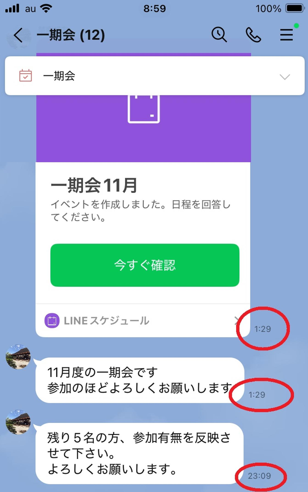

うるがいの話 ある日
最新: 迷惑なライン【うるがいの話 ある日】とは 一日だけのプログです
『うるがいの話』の最新一日だけのプログで、通信料が少なく経済的だ。カニの画像をクリックすると全ての日付が載る『うるがいの話』サイトを表示します
|
|
【うるがいの話】 うるがい(ｳﾙｶﾞｲ urugai)とは、『もずくがに』の名前でとても大きくなります。 |
|---|---|
|
|
【カミマヤーの話】 猫のことを方言でマヤーといいます。カミマヤー（kamimayaa）とは、神の猫のことです。 |
|
【たながぁの音楽】 たながぁ（ﾀﾅｶﾞｰ tanagaa）とは手長えびのことで、何種類かあり大きいのは車 エビぐらいになります。 |

|
【ぶながぁの話】 ぶながぁ(ﾌﾞﾅｶﾞｰ bunagaa)とは、赤い髪の毛、赤い身体、そして身長は１ｍ２０ｃｍ ぐらい、川の蟹を食べているの目撃された。場所は沖縄県国頭郡大宜味村のと ある村僕の隣近所に住んでいる爺さんから、聞いた話です。 |
|
|
【ギーマの話】 ギーマ(giima)とは、山原の里山に咲くスズランに似た、 花を付けます。実は食べられます、 気が付くと口の周りが紫になっています。 |
2025年11月18日 (火）迷惑なライン
15:49

昨日の夜８時８分、生命保険の外交員からラインで『一時払い保
険の利率が良くなりました！、２１日（金）１１：３０ご都合は
いかかですか？』と、２１日は叔母さんの一年忌なのです、当面
は都合が悪いので来年以降にお願いしますと断る。保険辞めよう
かとも思っているのにモー。そして、さらに時間帯が無茶苦茶な
ソナンのライン、深夜１時半！！！！、老害だぜ。

参加の回答を使用にも、設定の不備があるのか回答も出来なかっ
た！、問い合わせるのもしたくないのでシカとした。毎月このラ
インの参加可否が、来るのです。ライングループを削除しようか
と思うのだが・・・・。
日の出がかなり遅くなってきた。雨戸を開け新聞を取ろうとする
と、バイクが近づいきた。６時半、新聞配達員から、手渡しで新
聞をもらう。その後、バイクは去っていたので、近所で琉球新報
をとっているのはうちだけかと考える。
朝の８時、排石しました。スッキリです長引かなくて良かった。